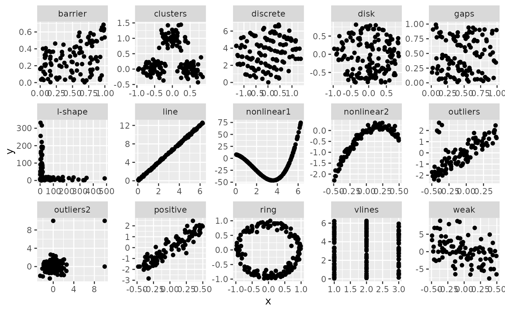

Compute skinny scagnostic measure
sc_skinny(x, y) # S3 method for scree sc_skinny(x, y = NULL) # S3 method for default sc_skinny(x, y) # S3 method for list sc_skinny(ahull)
| x | numeric vector of x values |
|---|---|
| y | numeric vector of y values |
| ahull | alpha hull object as returned by gen_alpha_hull |
require(ggplot2) require(dplyr) ggplot(features, aes(x=x, y=y)) + geom_point() + facet_wrap(~feature, ncol = 5, scales = "free")  features %>% group_by(feature) %>% summarise(skinny = sc_skinny(x,y)) #> Warning: success: collinearities reduced through jitter #> Warning: dataset started with 3 colinear points, jitter added! #> # A tibble: 15 × 2 #> feature skinny #> <chr> <dbl> #> 1 barrier 0.242 #> 2 clusters 0.536 #> 3 discrete 0.0714 #> 4 disk 0.182 #> 5 gaps 0.219 #> 6 l-shape 0.727 #> 7 line 1 #> 8 nonlinear1 0.306 #> 9 nonlinear2 0.672 #> 10 outliers 0.466 #> 11 outliers2 0.294 #> 12 positive 0.393 #> 13 ring 0.709 #> 14 vlines 0.131 #> 15 weak 0.148 sc_skinny(datasaurus_dozen_wide$away_x, datasaurus_dozen_wide$away_y) #> [1] 0.2764928